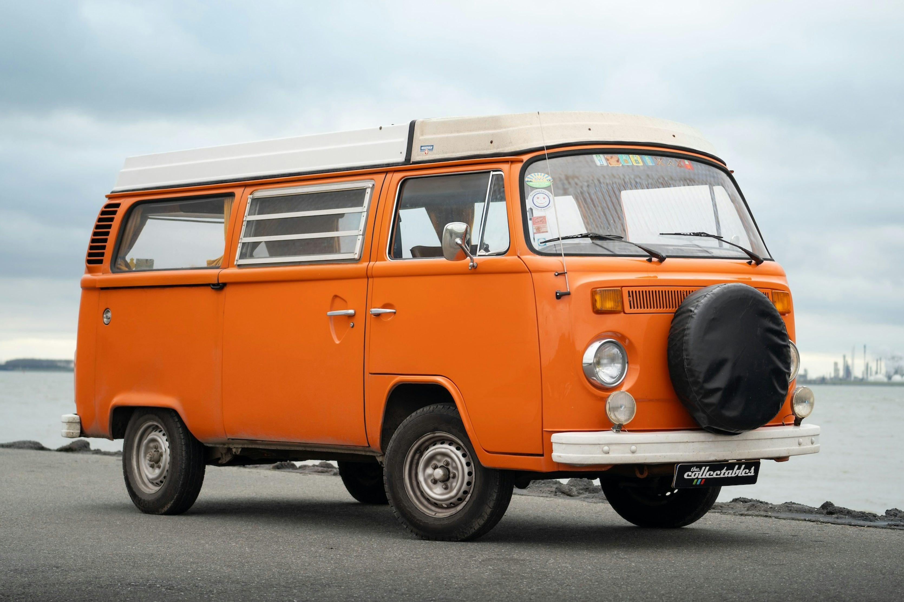

1950
Início da produção da Kombi na Alemanha.
Mais que um veículo, um símbolo de liberdade, aventura e nostalgia. Conheça a história de um dos automóveis mais queridos do Brasil.
Conhecer a história
A Volkswagen Kombi começou a ser produzida na Alemanha em 1950. Seu design característico e sua versatilidade fizeram dela um veículo reconhecido mundialmente.
No Brasil, a Kombi começou a ser montada em 1953, e sua fabricação nacional teve início em 1957. Ela foi utilizada no transporte de passageiros, mercadorias e em diversas atividades comerciais.
A produção brasileira terminou em 2013, após mudanças nas exigências de segurança para veículos novos, incluindo freios ABS e airbags frontais.
Início da produção da Kombi na Alemanha.
Início da fabricação nacional no Brasil.
Encerramento da produção brasileira da Kombi.
Clique no botão para descobrir uma curiosidade sobre a Kombi!
Entre em contato e compartilhe sua paixão pelos clássicos!
Fale comigo